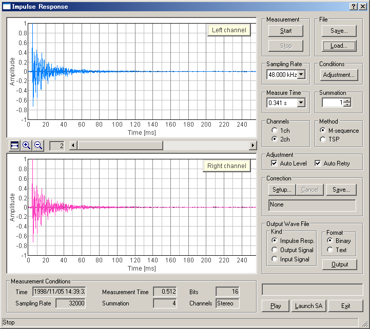
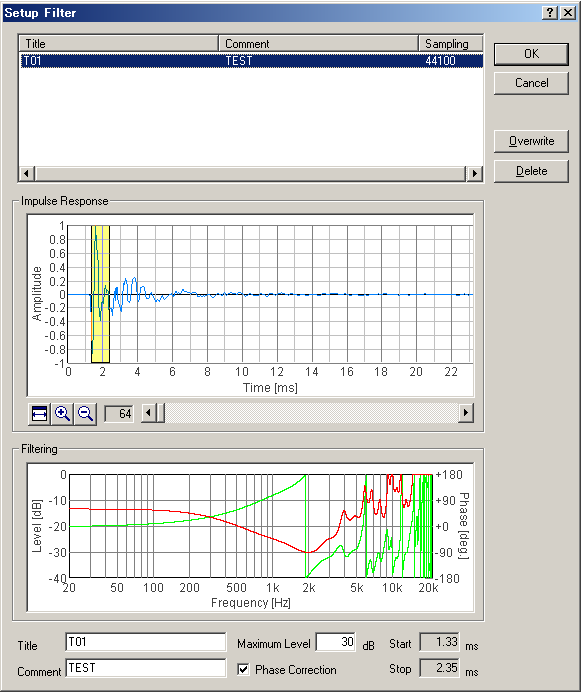
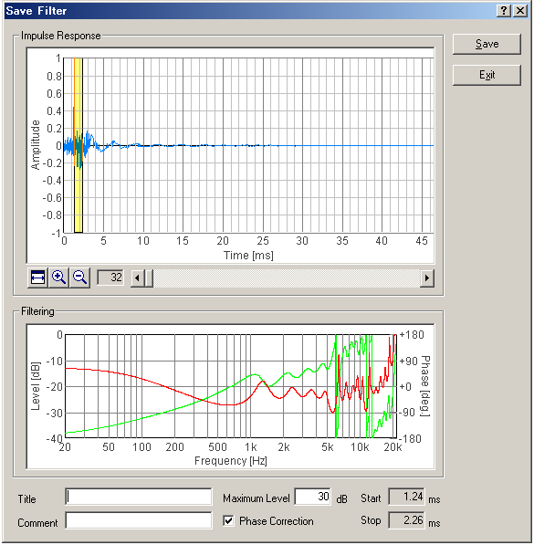

DSSF3 > RA > Impulse response > Tips for the advanced measurement
Frequency response compensation by the inverse filter
It is ideal if a quality microphone and a loudspeaker are used. However, even if it is difficult to use such superior equipments, the measurement accuracy can be improved in RA by using the correcting function.
Correction of the measurement system by the Inverse filter
The response of the measurement system itself (including microphone, amplifier, loudspeaker, and PC), can be compensated by creating the inverse filter. By removing the response of the measurement system, the correct response of the sound field can be measured. Procedures for creating the inverse filter is described below.
To create an inverse filter, measure the impulse response close to the loudspeaker. This is to remove the effect of room. Impulse response just after the direct sound represents the response of the measurement system.
- To create an inverse filter, place the microphone close to the loudspeaker and measure the impulse response. Then, click the "Save" button for "Correction". The "Save Filter" dialog opens.

- In the "Save Filter" dialog, responses of the loudspeaker and the microphone are cut. Select only the direct sound from the impulse response. Input the Maximum Level which should be compensated. In this example, this value is set to 30 dB, but there is no limit. However, note that so large peaks or dips in the frequency response could not be compensated. After the adjustment, enter the title and comment, and click the Save button.

- Click the "Setup" button for correction. "Setup Filter" dialog opens. Select the filter and click the OK button.

- Then, start the measurement again. You will see the response of the measurement system is now removed.
DSSF3 > RA > Impulse response > Tips for the advanced measurement